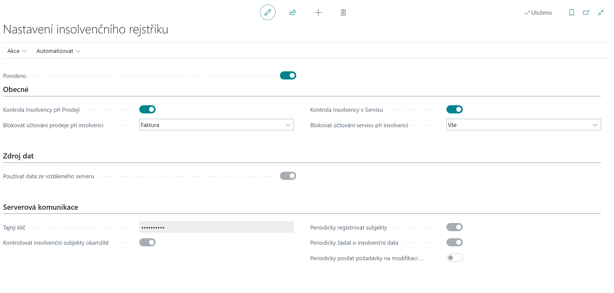
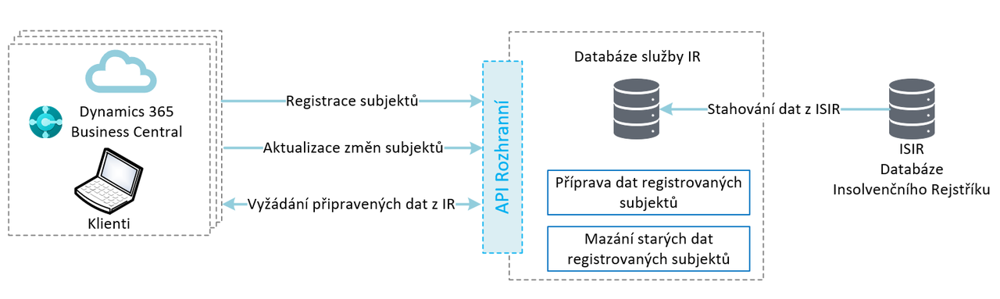

Nastavení Insolvenčního rejstříku
Nejprve je potřeba modul Insolvenčního rejstříku správně nakonfigurovat a nastavit způsob, jakým se data z Insolvenčního rejstříku stahují do vaší databáze Business Central.
Nastavení serverové komunikace (moderní)
Nový způsob komunikace je možný jak pro Online, tak i On-premises verzi Business Central. Pro zprovoznění je třeba kontaktovat **ARICOMA (bc_sales@aricoma.com)** pro získání přístupového klíče.
- Vyberte ikonu
 , zadejte Nastavení insolvenčního rejstříku a poté vyberte související odkaz.
, zadejte Nastavení insolvenčního rejstříku a poté vyberte související odkaz. - Ověřte, že na záložce Zdroj dat je zapnuto pole Používat data ze vzdáleného serveru.
- Doplňte hodnotu přístupového klíče, který jste obdrželi od firmy ARICOMA, do pole Tajný klíč.
- Pole Kontrolovat insolvenční subjekty okamžitě umožňuje okamžitou kontrolu při změnách na kartách zákazníků/dodavatelů.
- Pole Periodicky registrovat subjekty zajišťuje automatickou registraci nových zákazníků/dodavatelů na server. Jeho nastavení automaticky vytváří úlohu plánovače pro tento účel.
- Pole Periodicky žádat o insolveční data zajišťuje pravidelné stahování aktuálních insolvenčních informací ze serveru. Jeho nastavení automaticky vytváří úlohu plánovače pro tento účel.
- Pole Periodicky posílat požadavky na modifikaci slouží k odesílání čekajících požadavků na úpravu dat na server. Toto pole lze aktivovat pouze tehdy, když není povolena okamžitá kontrola insolvenčních subjektů a automaticky se deaktivuje při zapnutí okamžitých kontrol. Jeho nastavení automaticky vytváří úlohu plánovače pro tento účel.
- Aktivujte příznak Povoleno.
- Pokud se vám zobrazí Podmínky třetích stran, přečtěte si je a potvrďte souhlas tlačítkem Přijímám.
- Zavřete stránku.

Schéma komunikace se serverem IR 
Každá z periodických úloh vytváří záznam v Položkách fronty úloh, kde můžete sledovat jejich stav.

Nastavení komunikace (klasické)
V On-premises verzi je možné využívat i nadále režim stahování dat do databáze. Zásadním rozdílem oproti modernímu způsobu popsanému výše je, že v tomto režimu jsou stahována veškerá data Insolvenčního rejstříku do databáze zákazníka (v roce 2025 je velikost dat IR v BC cca 27GB).
- Vyberte ikonu , zadejte Nastavení insolvenčního rejstříku a poté vyberte související odkaz.
- Ověřte, že na záložce Zdroj dat je vypnuto pole Používat data ze vzdáleného serveru.
- Akcí Nastavit výchozí webovou službu je možné nastavit do výchozího stavu adresu webové služby.
- Zkontrolujte požadovanou periodu stahování.
- Aktivujte příznak Povoleno.
- Přečtěte si Podmínky třetích stran a potvrďte souhlas tlačítkem Přijímám.
- Zavřete stránku.
Nastavení kontroly insolvence při prodeji a v servisu
- Vyberte ikonu , zadejte Nastavení insolvenčního rejstříku a poté vyberte související odkaz.
- Aktivujte Kontrola insolvence při prodeji pro upozorňování uživatelů při tvorbě prodejních dokladů na fakt, že má zákazník případ insolvence (otevřený či uzavřený).
- V poli Blokování účtování prodeje při insolvenci nastavte, zda-li má být v případě aktivní Věci insolvenčního řízení blokováno účtování dodání, faktury nebo vše.
- Aktivujte Kontrola insolvence v Servisu pro upozorňování uživatelů při tvorbě servisních dokladů na fakt, že má zákazník případ insolvence (otevřený či uzavřený).
- V poli Blokování účtování servisu při insolvenci nastavte, zda-li má být v případě aktivní Věci insolvenčního řízení blokováno účtování dodání, faktury nebo vše.
- Zavřete stránku.
Nastavení uživatele s oprávněním vypínat kontrolu insolvence
- Vyberte ikonu , zadejte Nastavení uživatelů a poté vyberte související odkaz.
- Vyberte uživatele a nastavte hodnotu v poli Povolit odemknutí blokace insolvence na Ano.